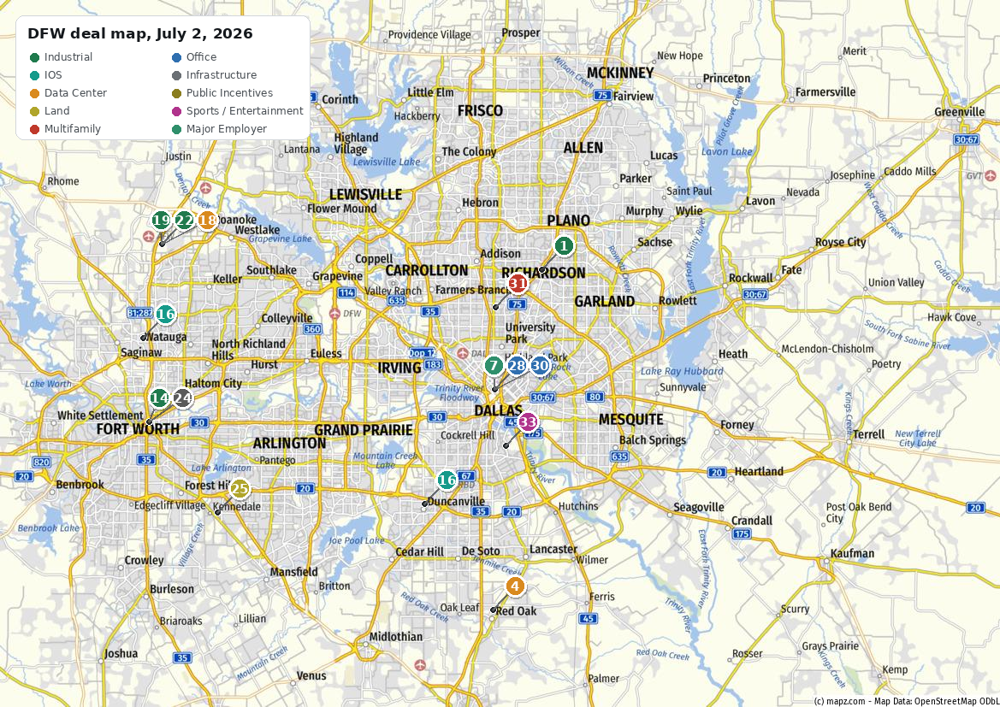
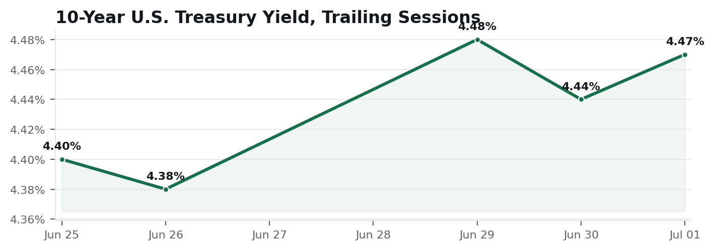
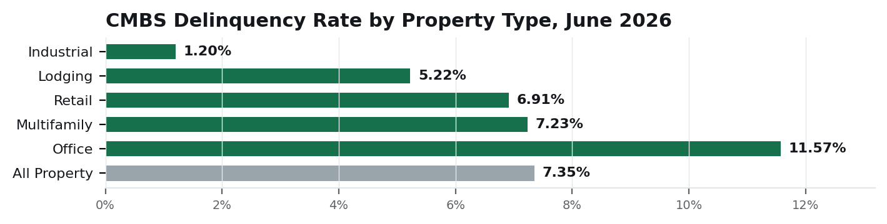

| Industrial | Positive | Record Q1 2026 leasing (21.0M SF), absorption ahead of deliveries, and industrial CMBS delinquency at 1.20%, the cleanest of any property type [10][11][13][40]. |
| Investment Sales | Positive | MSCI Q1 2026 volume up 18% y/y with industrial leading sector growth at 27% y/y; Zenith and CanTex remain active, plus an unconfirmed Ares deal-sheet headline [15][16][17][44]. |
| Multifamily | Negative | Blackstone reportedly facing foreclosure on a $90M North Dallas loan; June's Texas foreclosure-flagged total hit a tracking-period record, concentrated in multifamily and hospitality [31][32]. |
| Office | Neutral | Uptown is bifurcating: fresh capital funding a $1.3B Morgan Stanley commitment and a new Stonelake spec tower while Hillwood Urban tests a sale of an existing trophy asset [7][28][30]. |
| Retail | Neutral | No material retail transactions or leases surfaced in the coverage window. |
| Land / Development | Positive | Hillwood's AllianceTexas pipeline has grown to roughly 8.2M SF under construction or design, and a pending 310,036 SF incentive deal is in front of Fort Worth council [19][21][22]. |
| Debt / Capital Markets | Neutral | Treasuries are range-bound in a tight band and the Fed is on hold, but a new Fed Chair and a softer ADP print add two-sided risk into the July 28 to 29 FOMC [34][35][36][38]. |
Verified facts. Celestica renewed its lease on its existing two-building advanced-manufacturing campus on Telecom Parkway in Richardson and signed for a new 343,000 SF building, bringing its total campus footprint to approximately 1 million square feet through 2036. The company plans to invest roughly $300M in tenant improvements and equipment over two years and expects to add approximately 2,300 permanent jobs; the City of Richardson approved a $3M tenant-improvement grant. Reported June 17 to 18, 2026 [1][2][3].
Why it matters. The largest confirmed DFW manufacturing-campus commitment of the week, reinforcing Richardson's Telecom Corridor as a target for advanced-manufacturing and data-center-supply-chain tenants that need large contiguous blocks with heavy power capacity.
Investment sales implication. Analyst Inference Expect increased owner and developer interest in large-block, power-heavy manufacturing product along the Telecom Corridor; this is a strong comp for other North Dallas municipalities structuring incentive packages to compete for similar advanced-manufacturing users.
| DataBank Red Oak Campus, Capital Stack to Date | |
| Corporate revolving credit facility | $800M, matures 2031 |
| Construction financing upsize | $650M (June 15, 2026) |
| Prior MUFG-led construction loan | $2.0B (April 21, 2026), DFW9 to DFW11 |
| First three buildings | 600,000 SF; 180 MW; anchored by Oracle |
| Full campus plan | 8 buildings; up to 480 MW; 292 to 300 acres |
Verified facts. DataBank closed more than $1.45B in new financing, an $800M revolving credit facility plus a $650M upsize of construction financing, for its 292 to 300-acre campus in Red Oak, roughly 20 miles south of Dallas. This builds on an earlier $2.0B MUFG-led construction loan (announced April 21, 2026) for the campus's first three buildings, DFW9 through DFW11, totaling 600,000 SF and 180 MW, anchored by Oracle. The full campus is planned for eight buildings and up to 480 MW of IT load. Financing close reported June 15, 2026 [4][5][6].
Why it matters. Capital at this scale for a single South Dallas County campus confirms institutional lenders remain willing to underwrite hyperscale power-heavy projects even as broader CRE lending stays cautious, and it puts Red Oak alongside AllianceTexas as a DFW power and land corridor.
Investment sales implication. Analyst Inference Expect land brokers and owners in southern Dallas County to market power-adjacent parcels against this comp, and increased diligence interest from other data-center operators evaluating ERCOT interconnection queue position near Red Oak.
Verified facts. Dallas City Council voted to approve an $18.5M incentive package tied to Morgan Stanley's proposed 708,000 to 709,000 SF office tower at 2401 McKinney Ave in Uptown, developed by Trammell Crow Co. Total project value is cited at $1.3B, with Morgan Stanley weighing roughly $684M to $700M of that against a competing site in Alpharetta, GA. Reporting describes a planned 16-year lease from 2031, growing from approximately 1,500 employees to as many as 4,800 by 2039, with construction slated to start fall 2026. Council vote reported June 24, 2026 [7][8][9].
Why it matters. The single largest corporate-commitment story of the week for DFW CRE at large and the clearest signal that Uptown remains competitive for major financial-services HQ decisions against Sun Belt alternatives. Per the Top Three balance rule, this is the one non-industrial story large enough to hold the third slot.
Investment sales implication. Analyst Inference A confirmed incentive-per-job structure at this scale becomes the reference point for future Uptown or Dallas CBD incentive negotiations; expect increased developer interest in adjacent McKinney Avenue sites regardless of Morgan Stanley's final decision.
DFW industrial vacancy stood at roughly 8.8% to 9.2% in Q1 2026 (figures vary by brokerage methodology), down 40 to 60 basis points quarter-over-quarter and year-over-year, on record Q1 leasing of 21.0M SF and net absorption of roughly 9.4M to 10.4M SF against 5.7M SF delivered. Approximately 33.4M SF remained under construction (40.9% pre-leased) against a base of roughly 1.12 billion SF, with average NNN asking rent in the $9.56 to $10.24/SF range [10][11][12][13]. No Q2 2026 quarterly report had been published by any major brokerage as of this morning; any Q2-dated figure in circulation should be treated as unconfirmed until brokerages report [10].
Analyst InferenceThe spread between tight small-bay and flex space and looser big-box vacancy above 10% means listings should be priced by building-size cohort, not against a single blended market number.
Lee & Associates DFW placed a tenant in a 35,000 SF industrial lease at 566 N Beach St in Fort Worth, closing June 19 [14]. Celestica's Richardson campus expansion (Section 1) is the week's largest confirmed leasing commitment [1][2][3].
Analyst InferenceSmall-bay Fort Worth product continues to move even as headline vacancy sits above the metro average, consistent with the fundamentals split above.
Zenith Industrial Outdoor Storage closed a three-property, roughly 30-acre IOS portfolio spanning Duncanville and Blue Mound (plus a Tulsa asset), five buildings and more than 105,000 SF of improvements; no price disclosed. Reported June 23, 2026 [16]. Bisnow's June 29 DFW Deal Sheet headlined an Ares acquisition of an industrial portfolio in an unnamed premier corridor of DFW; the underlying article could not be independently confirmed and the address, size, and price remain unverified [15]. CanTex Capital's April sale of a majority interest in its 20-asset, 1.3M SF shallow-bay portfolio to Partners Group and an undisclosed New York investor remains relevant background: CanTex retained a minority stake and disclosed more than $460M in 2025 Class B industrial dispositions across Texas [17].
Analyst InferenceZenith's back-to-back DFW IOS buys and CanTex's disposition cadence both point to institutional capital treating DFW outdoor storage and shallow-bay product as a distinct, actively traded asset class rather than a niche.
DataBank's $1.45B financing close (Section 1) is the week's anchor data-center capital event [4][5][6]. Celestica separately committed to a data-center-equipment manufacturing campus at Hillwood's AllianceTexas exceeding 1M SF and roughly 1,700 jobs; reported investment figures conflict between sources ($876M per Bisnow versus $300M per CoStar) and should be confirmed before citing a specific number [18][45]. ERCOT and Oncor's Southern DFW Load Interconnection project remains the standing infrastructure story behind this demand, with Oncor projecting more than 4 GW of load growth across greater DFW [46].
Analyst InferenceFinancing at this scale for a single South Dallas County campus, alongside ERCOT's new large-load batch-review process, confirms power availability, not capital, is now the binding constraint on new DFW data-center and heavy-power industrial sites.
Fort Worth's City Council is weighing up to $4.5M in incentives over 10 years for Mach Industries, a defense-tech drone manufacturer, to occupy Hillwood's 310,036 SF Alliance Gateway 34 building in exchange for a $74M investment and at least 1,000 jobs; a council vote is set for August 10 [19][20][21]. Hillwood announced Alliance Westport 16, a 1,214,969 SF Class A spec building (completion targeted July 2027), on top of two smaller spec buildings (268,623 SF and 501,235 SF) already under construction, bringing its AllianceTexas pipeline to roughly 8.2M SF under construction or in design [22][23]. In Fort Worth, council unanimously approved case ZC-25-208 on April 28, unifying zoning at 8.47 acres at 5051 South Freeway to Light Industrial [24]. The Black Mountain Power rezoning near Forest Hill and Kennedale (450-plus acres for a proposed $10B data center campus) still has an 80-acre council vote pending after resident pushback [25][26].
Analyst InferenceHillwood's 8.2M SF spec pipeline and the pending Mach Industries lease show AllianceTexas absorbing new supply about as fast as it delivers it, which should keep asking rents firm in that corridor even as citywide big-box vacancy sits above 10%.

| Status | Category / Submarket | Asset / Key Parties | Trigger / Size or Value | Brokerage Angle (Analyst Inference) | Src |
|---|---|---|---|---|---|
| Upd | IndustrialRichardson | Telecom Parkway campusCelestica; City of Richardson | Lease renewal plus new 343,000 SF building; $300M capex; ~2,300 jobs; $3M city TI grant. 343K SF new; ~1M SF total. | Comp for power-heavy manufacturing incentive packages along the corridor. | [1,2,3] |
| New | IndustrialFort Worth | 566 N Beach StTenant unconfirmed; Lee & Associates DFW | 35,000 SF industrial lease closed June 19. 35,000 SF. | Small-bay Fort Worth comp; tenant-rep potential. | [14] |
| New | IndustrialAlliance | Alliance Gateway 34Mach Industries; Hillwood; City of Fort Worth | Council weighing $4.5M incentive; August 10 vote; $74M investment, 1,000-plus jobs. 310,036 SF. | Pending absorption; a fresh incentive-per-job comp if approved. | [19,20,21] |
| New | IndustrialAlliance | Alliance Westport 16 plus two spec buildingsHillwood | 1,214,969 SF spec building announced; AllianceTexas pipeline now ~8.2M SF. 1.21M SF; delivery July 2027. | Major new supply; large-bay leasing opportunity and rent-comp watch. | [22,23] |
| Upd | IOSDuncanville / Blue Mound | Three-property IOS portfolioZenith IOS (buyer); Newmark (broker) | Acquired five-building, roughly 30-acre portfolio; 105K-plus SF; price undisclosed. ~30 acres. | Active IOS buyer; owner outreach candidate on comparable sites. | [16] |
| Upd | Data CenterRed Oak | DataBank campus (DFW9 to DFW11)DataBank; Oracle; MUFG; Citizens Bank N.A. | Closed $1.45B financing following the $2.0B April construction loan; 180 MW live, up to 480 MW planned. 292 to 300 acres. | Capital-conviction signal for power-heavy land in southern Dallas County. | [4,5,6] |
| New | Data CenterAlliance | Celestica equipment-manufacturing campusCelestica; Hillwood | Data-center-equipment manufacturing commitment; investment figure disputed between sources. 1M-plus SF; ~1,700 jobs. | Supply-chain-adjacent demand driver for AllianceTexas land and big-box. | [18,45] |
| New | LandKennedale | Black Mountain Power siteBlack Mountain Power; City of Fort Worth | 450-plus acres rezoned for a proposed $10B campus; an additional 80-acre vote remains pending. 450-plus acres. | Large entitlement with reuse optionality if campus scope shifts. | [25,26] |
| New | Municipal / ZoningFort Worth | 5051 South FreewaySeries C LLC / Diamond Creek Investments | Council approved ZC-25-208 April 28, unifying Light Industrial zoning. 8.47 acres. | Entitlement-precedes-disposition signal; outreach candidate. | [24] |
| Upd | LandGainesville (noted, not mapped) | Camp Howze Industrial Rail ParkStream Realty; Hughes Commercial; B-29 Investments; BNSF | Groundbreaking June 18; dedicated BNSF connection targeted in service by Q2 2027. 489 acres; up to 7M SF. | Emerging rail-served node north of core DFW; longer-dated watch item. | [27] |
| New | Major EmployerUptown Dallas | 2401 McKinney Ave towerMorgan Stanley; Trammell Crow Co.; City of Dallas | Council approved $18.5M incentive June 24; construction projected fall 2026. 708 to 709K SF; $1.3B. | Catalyst for further Uptown investment; watch adjacent site interest. | [7,8,9] |
| New | OfficeUptown Dallas | Victory Commons OneHillwood Urban; Affinius Capital; JLL | JLL hired to explore a sale, refinance, recapitalization, or new equity partner. 364,428 SF; 93% leased. | Trophy disposition candidate; a live Uptown pricing comp when it clears. | [28,29] |
| New | OfficeUptown Dallas | 2626 McKinney AveStonelake Capital Partners; Bank OZK (reported) | Construction financing secured; groundbreaking expected July 2026. 17 stories. | Spec office conviction signal at the top of the Uptown market. | [30] |
| New | Distress / Lender ActionNorth Dallas | 75 West ApartmentsBlackstone (borrower, reported); Ares (lender) | Foreclosure action reported June 26; auction date unconfirmed. 490 units; $90M loan. | Multifamily distress sourcing signal; track servicer and disposition path. | [31] |
| New | Sports / EntertainmentSouth Dallas | Cotton Bowl (interim); stadium site searchAtletico Dallas; Dallas Trinity FC | Acquired Trinity FC June 30; unified group searching for a permanent stadium and training site. Terms undisclosed. | Future stadium search is a land watch item into the fall. | [33] |
Office, multifamily, and sports items with full deal detail appear as rows in the Section 3 table above and are not repeated here.
Dallas Council approved the $18.5M incentive tied to Morgan Stanley's proposed $1.3B Uptown tower [7][8][9]. Hillwood Urban is evaluating a sale, refinance, recapitalization, or new partner for Victory Commons One (364,428 SF; 93% leased) [28][29], while Stonelake secured construction financing for a 17-story spec tower at 2626 McKinney [30].
Analyst InferenceUptown is bifurcating in real time: fresh capital is funding new trophy supply and an incentive-backed HQ commitment while an existing trophy owner tests the market.
Blackstone reportedly faces foreclosure on a $90M Ares loan tied to the 490-unit 75 West Apartments in North Dallas [31]; June's Texas CRE foreclosure-flagged total reportedly reached $1.3B, concentrated in multifamily and hospitality [32].
Analyst InferenceA high-profile borrower facing foreclosure is a marker that North Dallas Class B multifamily distress extends beyond smaller private owners.
No material retail development surfaced in the coverage window. North Texas hotels reportedly saw a late-June World Cup-related demand surge, but exact figures were not independently confirmed [13][43].
Atletico Dallas acquired Dallas Trinity FC on June 30. The unified ownership group will play at the Cotton Bowl while it searches for a permanent stadium and training-facility site after Garland declined the earlier proposal [33].
Analyst InferenceA dual-club group actively searching for a stadium site is a land story worth tracking into the fall, though no specific site has been named.


Prologis made an indicative all-share proposal June 16 to acquire Segro at roughly 12.6 billion pounds; Segro rejected it June 23. A firm-offer-or-walk-away deadline is July 22 [48][49][50].
DFW read-through. Analyst Inference Continued institutional conviction in scaled industrial portfolios is supportive for DFW owners evaluating exit timing.
Industrial CMBS delinquency is 1.20% versus 11.57% for office, confirming collateral-quality divergence even as the headline rate fell [40].
DFW read-through. Analyst Inference DFW industrial borrowers should retain comparatively better lender appetite and refinance proceeds.
MSCI reported U.S. CRE investment volume of $110.7B in Q1 2026, up 18% y/y, with industrial leading at $31B, up 27% y/y [44].
DFW read-through. Analyst Inference Record DFW Q1 leasing and absorption make the market a credible recipient of reallocating industrial capital.
New Fed leadership and the June 17 hold at 3.50% to 3.75% add rate-path uncertainty into the July 28 to 29 FOMC [38][41].
DFW read-through. Analyst Inference Tighten assumptions on floating-rate acquisition debt and 2026 to 2027 refinance timing.
| Opportunity | Asset / Owner / Company | Evidence + Why It May Matter | Suggested Broker Question | Confidence |
|---|---|---|---|---|
| Entitlement-driven disposition signal | 5051 South Freeway, Fort Worth (Series C LLC / Diamond Creek) | Fort Worth Council unanimously approved ZC-25-208, unifying Light Industrial zoning, April 28, 2026 [24]. Owners often unify split zoning before marketing or beginning development. | Now that the site carries unified Light Industrial zoning, is there interest in a land sale, ground lease, or build-to-suit partner? | Medium |
| Partial exit and further-disposition signal | CanTex Capital, 20-asset / 1.3M SF shallow-bay portfolio | April 6 release confirms a majority-interest sale; CanTex retained a minority stake and disclosed $460M-plus in 2025 Class B Texas dispositions [17]. This is a live conversation for the rest of its DFW book. | Is the retained minority stake a hold-to-recap position, or are other DFW shallow-bay assets planned for exit? | Early Signal |
| Large-parcel entitlement with reuse optionality | Black Mountain Power, 450-plus acres, Forest Hill / Kennedale | Ag-to-Light-Industrial rezoning approved for a proposed $10B data center; an additional 80-acre request is pending [25][26]. If campus scope changes, entitled acreage could fit conventional industrial use. | Is any portion of the entitled acreage available for a conventional industrial or logistics user if campus phasing changes? | Early Signal |
| Status | Date | Catalyst | Consequence to Monitor |
|---|---|---|---|
| Closed | July 2, 2026 | Official June nonfarm payrolls report, released this morning after compilation. | A weak print raises the odds of a more dovish Fed pivot; a strong print reinforces the hawkish June dot plot [42]. |
| Carry | July 17, 2026 | Deadline for PUC and ERCOT to submit an implementation proposal on the directive that data centers fully fund their own grid infrastructure costs. | The cost-allocation mechanism adopted will directly affect underwriting for every DFW data-center land deal in diligence [51]. |
| Carry | Mid-to-late July 2026 | Q2 2026 DFW industrial market reports from CBRE, JLL, Cushman & Wakefield, Newmark, and Colliers are expected to publish. | These will be the first hard read on whether Q1's record leasing volume translated into a vacancy decline, and will reset the comp set this brief has been citing from Q1 data. |
| New | July 22, 2026 | Prologis deadline to announce a firm Segro bid or walk away. | A completed deal could accelerate logistics-portfolio consolidation appetite reaching DFW sellers [48][49][50]. |
| New | July 28 to 29, 2026 | FOMC meeting, the second under Chair Warsh. | Any shift from the June 17 hold directly reprices DFW industrial cap rates and refinance proceeds [38][39]. |
| New | August 10, 2026 | Fort Worth Council vote on the $4.5M Mach Industries incentive package. | Approval would fill 310,036 SF at Alliance Gateway 34 and set a fresh incentive-per-job comp [19][20][21]. |
Pull comparable South Freeway corridor industrial land trades within three miles of 5051 South Freeway and build a per-acre comp sheet before outreach to Series C LLC / Diamond Creek Investments on its newly unified 8.47-acre Light Industrial site.